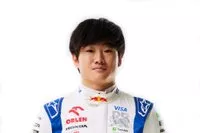
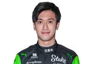

Pilotos Atuais da F1
-
Lewis Hamilton (Mercedes)
Sete vezes campeão mundial, Hamilton é um dos pilotos mais bem-sucedidos da história da F1, conhecido por sua habilidade em pista molhada e sua consistência.
-
George Russell (Mercedes)
Um jovem talento britânico, Russell tem mostrado grande promessa e habilidade desde sua estreia na F1. Em 2022, ele se juntou à Mercedes, demonstrando competitividade e potencial de campeonato.
-
Max Verstappen (Red Bull)
Tricampeão mundial, Verstappen é conhecido por seu estilo de pilotagem agressivo e sua habilidade para ultrapassagens ousadas. Ele é uma das estrelas mais brilhantes da F1 atual.
-
Sergio Perez (Red Bull)
Conhecido por sua habilidade em gerenciar pneus e por suas corridas consistentes, Perez trouxe experiência e estabilidade para a Red Bull, desempenhando um papel crucial na equipe.
-
Charles Leclerc (Ferrari)
Um dos jovens talentos mais promissores, Leclerc já demonstrou velocidade e habilidade excepcionais, tornando-se rapidamente um favorito dos fãs da Ferrari.
-
Carlos Sainz (Ferrari)
Sainz é conhecido por sua consistência e habilidade técnica. Desde que se juntou à Ferrari, ele tem sido um competidor sólido e uma peça chave para a equipe.
-
Lando Norris (McLaren)
Um piloto jovem e talentoso, Norris rapidamente se tornou um dos favoritos na F1, conhecido por sua velocidade e personalidade carismática.
-
Oscar Piastri (McLaren)
Um estreante altamente aguardado, Piastri trouxe consigo um impressionante currículo nas categorias de base, incluindo títulos na Fórmula 2 e Fórmula 3.
-
Fernando Alonso (Aston Martin)
Bicampeão mundial, Alonso é conhecido por sua habilidade e experiência. Ele retornou à F1 com a Aston Martin, mostrando que ainda é um competidor feroz.
-

Lance Stroll (Aston Martin)
Stroll tem mostrado melhorias constantes em sua carreira, trazendo bons resultados para a equipe Aston Martin com sua velocidade e determinação.
-
Esteban Ocon (Alpine)
Ocon é um piloto talentoso que tem mostrado potencial e conseguido vitórias importantes para a Alpine, destacando-se por sua consistência e capacidade de adaptação.
-
Pierre Gasly (Alpine)
Gasly, vencedor de corridas, trouxe sua experiência e habilidade para a Alpine, buscando continuar a obter bons resultados e contribuir para o sucesso da equipe.
-

Yuki Tsunoda (RacingBulls)
Tsunoda é um jovem piloto japonês com um estilo de pilotagem agressivo. Ele está evoluindo rapidamente e buscando consistência para obter melhores resultados.
-
Daniel Ricciardo (RacingBulls)
Daniel Ricciardo é um experiente piloto australiano conhecido por seu carisma e ousadas ultrapassagens. Com várias vitórias, pódios e passagens por grandes equipes, Ricciardo está determinado a reafirmar seu talento e alcançar novos sucessos na Fórmula 1.
-
Alex Albon (Williams)
Após um período na Red Bull, Albon voltou à F1 com a Williams, onde tem mostrado resiliência e habilidade em maximizar o desempenho do carro.
-
Logan Sargeant (Williams)
Sargeant, um dos poucos pilotos americanos na F1, está em sua temporada de estreia, trazendo novas expectativas e potencial para a Williams.
-
Valtteri Bottas (Stake Sauber)
Ex-piloto da Mercedes, Bottas traz sua vasta experiência para a Alfa Romeo, onde busca liderar a equipe com sua consistência e habilidade técnica.
-

Zhou Guanyu (Stake Sauber)
O primeiro piloto chinês na F1, Zhou tem mostrado potencial e crescimento constante, buscando estabelecer-se como um competidor sólido.
-
Kevin Magnussen (Haas)
Magnussen é conhecido por seu estilo de pilotagem agressivo e capacidade de lutar por pontos em circunstâncias difíceis, trazendo experiência para a Haas.
-
Nico Hülkenberg (Haas)
Hülkenberg retorna à F1 com a Haas, trazendo uma vasta experiência e a reputação de ser um piloto confiável e rápido.